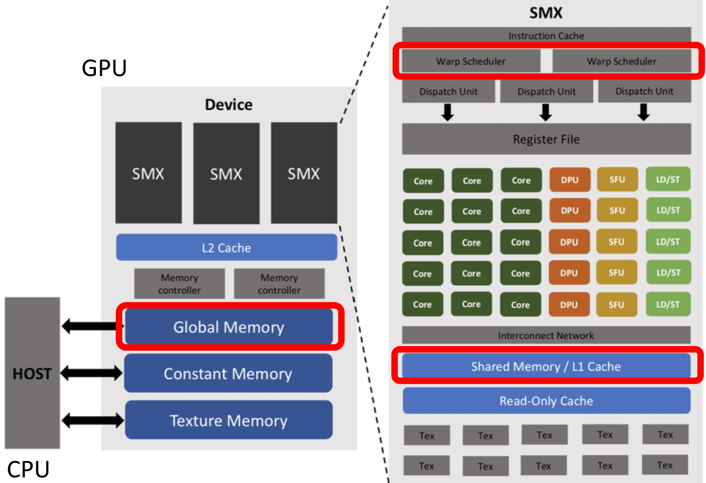
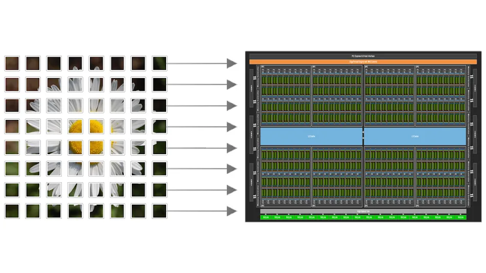
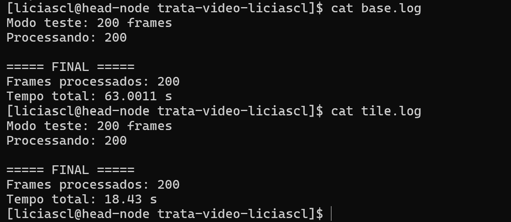
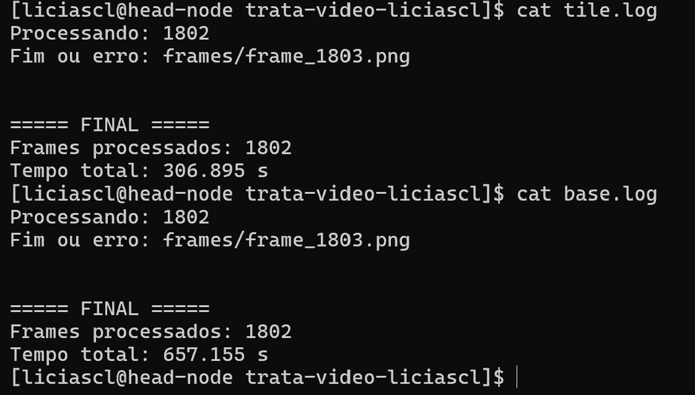

Revisão II - Estratégias de otimização em GPU¶
Depois de portar um código da CPU para GPU, é importante analisar suas características para identificar qual é o principal gargalo da aplicação. A partir dessa análise, é possível decidir quais técnicas de otimização fazem mais sentido para melhorar o desempenho.
Em relação aos gargalos¶
Existem funções com alto reaproveitamento de dados, em que diferentes threads acessam repetidamente os mesmos dados. Um exemplo clássico é o filtro de Sobel em imagens, onde pixels vizinhos são reutilizados várias vezes. Esse tipo de problema se beneficia muito de tiling e do uso de shared memory, já que os dados podem ser carregados uma vez e reutilizados por múltiplas threads, reduzindo acessos à memória global.
Outro possível gargalo é o acesso irregular à memória, que ocorre quando as threads acessam posições distantes entre si, prejudicando a localidade espacial. Estruturas como grafos e matrizes esparsas frequentemente apresentam esse problema. Nesses casos, vale reorganizar estruturas de dados para melhorar localidade espacial, utilizar formatos mais compactos e reduzir os acessos desalinhados.
Em aplicações com muitos valores zero, chamadas de dados esparsos, ocorre desperdício de memória e processamento ao armazenar e processar elementos irrelevantes. Nesse cenário, técnicas de compressão como CSR (Compressed Sparse Row) permitem armazenar apenas os valores não nulos, reduzindo uso de memória e largura de banda.
Por fim, um gargalo bastante comum é a transferência excessiva entre CPU e GPU. Em alguns casos, mover dados entre host e device pode custar mais caro do que a própria computação. Para reduzir esse impacto, é recomendado minimizar transferências, manter os dados na GPU pelo maior tempo possível, utilizar pinned memory e aplicar computação assíncrona com CUDA Streams, permitindo sobreposição entre transferência de dados e execução dos kernels.
Otimizando o código da atividade Trata Vídeo¶
O código base disponibilizado na atividade trata vídeo realiza, de forma geral, as seguintes etapas:
- Conversão RGB → grayscale
- Aplicação do filtro de Sobel
- Binarização
Cada uma dessas etapas apresenta características diferentes, permitindo o uso de diferentes técnicas de otimização para melhorar o desempenho.
Reaproveitamento de Dados¶
O filtro de Sobel aplica uma convolução 3x3 sobre a imagem. Isso significa que cada thread acessa não apenas o pixel atual, mas também seus vizinhos. Como pixels vizinhos são reutilizados várias vezes por threads próximas, podemos aplicar tiling e shared memory para melhorar o reaproveitamento de dados e diminuir o custo de transferência de dados entre Host e Device.
Na implementação original o acesso aos dados ocorre diversas vezes para pixels que poderiam ser reutilizados.
int pixel = gray[(y + ky) * w + (x + kx)];
Então podemos carregar um bloco da imagem para memória compartilhada e depois reutilizar os pixels entre as threads do bloco.
Com essa otimização, reduzimos acessos à memória global, aumentamos localidade espacial,melhoramos throughput do kernel e reduzimos latência.
No código base, o filtro Sobel é responsável por detectar bordas na imagem através de uma convolução 3x3.
A implementação original faz isso diretamente na memória global:
for (int ky = -1; ky <= 1; ky++) {
for (int kx = -1; kx <= 1; kx++) {
int pixel =
gray[(y + ky) * w + (x + kx)];
sumX += pixel * Gx[ky + 1][kx + 1];
sumY += pixel * Gy[ky + 1][kx + 1];
}
}
A Shared Memory é um tipo de memória extremamente rápida disponível dentro de cada Streaming Multiprocessor (SM) da GPU.

Para calcular o valor de um único pixel, cada thread precisa acessar não apenas o pixel central, mas também seus vizinhos. Como threads vizinhas utilizam praticamente os mesmos pixels durante a convolução, muitos acessos acabam sendo repetidos desnecessariamente na memória global.
Para resolver esse problema utilizamos a técnica chamada tiling.

O conceito de tiling consiste em dividir a imagem em pequenos blocos chamados tiles. Cada bloco CUDA fica responsável por carregar uma pequena região da imagem para a Shared Memory. Assim, em vez de cada thread acessar repetidamente a memória global, o bloco inteiro carrega os dados apenas uma vez e depois todas as threads reutilizam esses pixels localmente através da Shared Memory.
Neste exemplo, vamos utilizar blocos de $ 30 \times 30 $
Porém, o Sobel utiliza uma máscara de convolução $ 3 \times 3 $
Isso significa que, para calcular um pixel, também precisamos acessar seus vizinhos, o tile não pode armazenar apenas os pixels centrais do bloco. Também precisamos carregar pixels extras ao redor da região principal para que as threads consigam acessar os vizinhos corretamente durante a convolução.
Essas regiões extras recebem o nome de Halo.
Como estamos usando um bloco de $ 30 \times 30 $
e precisamos adicionar uma borda de 1 pixel em cada lado, o tamanho real do tile armazenado na Shared Memory passa a ser:
O +2 acontece porque adicionamos:
- 1 coluna extra à esquerda;
- 1 coluna extra à direita;
- 1 linha extra acima;
- 1 linha extra abaixo.
Dentro do kernel CUDA, a Shared Memory é criada utilizando o modificador:
__shared__
Por exemplo:
__shared__
unsigned char tile[BLOCK_SIZE + 2][BLOCK_SIZE + 2];
Com isso, a GPU passa a armazenar temporariamente os dados do tile em uma memória muito mais rápida e próxima das unidades de execução do SM. Dessa forma, reduzimos drasticamente os acessos à memória global e aumentamos o reaproveitamento de dados entre as threads do bloco.
#define BLOCK_SIZE 32
__shared__
unsigned char tile[BLOCK_SIZE][BLOCK_SIZE];
Aqui estamos criando:
- uma matriz compartilhada;
- acessível por todas as threads do bloco;
- incluindo espaço para o halo.
Cada thread possui:
int tx = threadIdx.x;
int ty = threadIdx.y;
Esses índices representam a posição da thread dentro do bloco.
Já a posição global da imagem é:
int x =
blockIdx.x * BLOCK_SIZE + tx;
int y =
blockIdx.y * BLOCK_SIZE + ty;
Cada thread copia um pixel da imagem para o tile:
tile[sy][sx] =
gray[y * w + x];
Onde:
int sx = tx + 1;
int sy = ty + 1;
O deslocamento +1 existe porque a borda do tile será reservada para o halo.
As threads das bordas ficam responsáveis por carregar pixels extras.
O Sobel passa a acessar:
tile[sy + ky][sx + kx]
em vez de:
gray[(y + ky) * w + (x + kx)]
Além do uso de Shared Memory e Tiling, também precisamos fazer algumas otimizações que ajuda a reduzir a latência, e diminuir acessos à memória global para aumentar o throughput da GPU.
No código original, o processamento era dividido em três etapas separadas:
- RGB → grayscale
- Sobel
- Threshold
Cada etapa percorre a imagem inteira novamente.
Isso gerava múltiplos acessos à memória global:
RGB -> grayscale
grayscale -> Sobel
Sobel -> threshold
Cada função lê os dados da memória global, processa, e escreve novamente na memória global. Como vimos, essa movimentação de dados de CPU para GPU e de GPU para CPU é muito custosa, uma forma simples de resolver isso é colocar essas funções em um único kernel CUDA:
RGB -> grayscale -> Sobel -> threshold
Com isso:
- o pixel RGB é carregado apenas uma vez;
- o grayscale já é armazenado diretamente no tile;
- o Sobel utiliza os dados da Shared Memory;
- o threshold é aplicado imediatamente após o Sobel.
Isso reduz drasticamente as leituras globais, as escritas globais, o overhead de múltiplos kernels e as sincronizações entre CPU e GPU.
As máscaras Sobel são pequenas e utilizadas por todas as threads repetidamente. Na versão original, essas máscaras eram recriadas dentro da função Sobel:
int Gx[3][3]
int Gy[3][3]
No kernel otimizado elas foram movidas para:
__constant__ int SOBEL_X[3][3];
Se quiser olhar como ficou o código com as otimizações descritas aqui:
Ver o código
// Biblioteca utilizada para carregar imagens PNG/JPG.
#define STB_IMAGE_IMPLEMENTATION
#include "stb_image.h"
// Biblioteca utilizada para salvar imagens.
#define STB_IMAGE_WRITE_IMPLEMENTATION
#include "stb_image_write.h"
// ============================================================
// BIBLIOTECAS
// ============================================================
#include <iostream>
#include <vector>
#include <queue>
#include <cmath>
#include <cstdio>
#include <filesystem>
#include <chrono>
#include <algorithm>
// Biblioteca principal do CUDA.
#include <cuda_runtime.h>
using namespace std;
// Alias para facilitar uso do filesystem.
namespace fs = std::filesystem;
// Alias para medição de tempo.
using namespace std::chrono;
// ============================================================
// CONFIGURAÇÃO DO BLOCO CUDA
// ============================================================
// Define o tamanho do bloco CUDA.
//
// Nesse caso:
// 32 x 32 = 1024 threads por bloco.
//
// Cada bloco processará uma região
// da imagem.
#define BLOCK_SIZE 32
// ============================================================
// ESTRUTURA DE BOUNDING BOX
// ============================================================
// Estrutura utilizada para representar
// caixas delimitadoras.
struct Box {
// Coordenadas mínimas e máximas.
int minx, miny, maxx, maxy;
};
// ============================================================
// MÁSCARAS SOBEL EM CONSTANT MEMORY
// ============================================================
// Constant Memory é uma memória otimizada
// para leitura.
//
// Como TODAS as threads usam as mesmas
// máscaras Sobel, faz sentido armazená-las
// aqui para reduzir acessos repetidos.
// Sobel horizontal.
__constant__ int SOBEL_X[3][3] = {
{-1, 0, 1},
{-2, 0, 2},
{-1, 0, 1}
};
// Sobel vertical.
__constant__ int SOBEL_Y[3][3] = {
{-1,-2,-1},
{ 0, 0, 0},
{ 1, 2, 1}
};
// ============================================================
// KERNEL CUDA FUSIONADO
//
// O kernel realiza:
//
// RGB -> Grayscale -> Sobel -> Threshold
//
// Tudo em UMA única execução.
// ============================================================
__global__
void pipeline_kernel(
// Imagem RGB original.
unsigned char* rgb,
// Saída binária final.
unsigned char* bin,
// Largura da imagem.
int w,
// Altura da imagem.
int h,
// Valor do threshold.
int threshold)
{
// ========================================================
// SHARED MEMORY
// ========================================================
// Shared Memory utilizada para armazenar
// um tile da imagem.
//
// Shared Memory é MUITO mais rápida
// que memória global.
//
// O tile será reutilizado pelas threads
// do bloco durante o Sobel.
__shared__
unsigned char tile[BLOCK_SIZE][BLOCK_SIZE];
// ========================================================
// THREAD IDS
// ========================================================
// Posição da thread dentro do bloco.
int tx = threadIdx.x;
int ty = threadIdx.y;
// Coordenada global da thread na imagem.
int x = blockIdx.x * BLOCK_SIZE + tx;
int y = blockIdx.y * BLOCK_SIZE + ty;
// Coordenadas dentro do tile.
//
// O +1 existe porque as bordas do tile
// serão utilizadas pelo halo.
int sx = tx + 1;
int sy = ty + 1;
// ========================================================
// CARREGAMENTO DO PIXEL CENTRAL
// ========================================================
// Verifica se a thread está dentro
// da imagem.
if (x < w && y < h)
{
// Índice do pixel RGB.
int idx = (y * w + x) * 3;
// Carrega canais RGB.
unsigned char r = rgb[idx];
unsigned char g = rgb[idx + 1];
unsigned char b = rgb[idx + 2];
// Conversão RGB -> grayscale.
//
// Fórmula padrão de luminância.
tile[sy][sx] =
(unsigned char)(
0.299f * r +
0.587f * g +
0.114f * b
);
}
// ========================================================
// HALO ESQUERDO
// ========================================================
// Threads da primeira coluna carregam
// pixels extras da esquerda.
//
// Esses pixels são necessários para
// o Sobel 3x3.
if (tx == 0 && x > 0 && y < h)
{
int idx = (y * w + (x - 1)) * 3;
unsigned char r = rgb[idx];
unsigned char g = rgb[idx + 1];
unsigned char b = rgb[idx + 2];
tile[sy][0] =
(unsigned char)(
0.299f * r +
0.587f * g +
0.114f * b
);
}
// ========================================================
// HALO DIREITO
// ========================================================
// Threads da última coluna carregam
// os pixels da direita.
if (tx == BLOCK_SIZE - 1 &&
x < w - 1 &&
y < h)
{
int idx = (y * w + (x + 1)) * 3;
unsigned char r = rgb[idx];
unsigned char g = rgb[idx + 1];
unsigned char b = rgb[idx + 2];
tile[sy][BLOCK_SIZE + 1] =
(unsigned char)(
0.299f * r +
0.587f * g +
0.114f * b
);
}
// ========================================================
// HALO SUPERIOR
// ========================================================
// Threads da primeira linha carregam
// pixels acima.
if (ty == 0 && y > 0 && x < w)
{
int idx = ((y - 1) * w + x) * 3;
unsigned char r = rgb[idx];
unsigned char g = rgb[idx + 1];
unsigned char b = rgb[idx + 2];
tile[0][sx] =
(unsigned char)(
0.299f * r +
0.587f * g +
0.114f * b
);
}
// ========================================================
// HALO INFERIOR
// ========================================================
// Threads da última linha carregam
// pixels abaixo.
if (ty == BLOCK_SIZE - 1 &&
y < h - 1 &&
x < w)
{
int idx = ((y + 1) * w + x) * 3;
unsigned char r = rgb[idx];
unsigned char g = rgb[idx + 1];
unsigned char b = rgb[idx + 2];
tile[BLOCK_SIZE + 1][sx] =
(unsigned char)(
0.299f * r +
0.587f * g +
0.114f * b
);
}
// ========================================================
// HALOS DIAGONAIS
// ========================================================
// Também precisamos carregar os
// cantos diagonais do tile.
//
// Isso acontece porque o Sobel usa
// TODA a vizinhança 3x3.
// Canto superior esquerdo.
if (tx == 0 && ty == 0 &&
x > 0 && y > 0)
{
int idx =
((y - 1) * w + (x - 1)) * 3;
unsigned char r = rgb[idx];
unsigned char g = rgb[idx + 1];
unsigned char b = rgb[idx + 2];
tile[0][0] =
(unsigned char)(
0.299f * r +
0.587f * g +
0.114f * b
);
}
// Canto superior direito.
if (tx == BLOCK_SIZE - 1 &&
ty == 0 &&
x < w - 1 &&
y > 0)
{
int idx =
((y - 1) * w + (x + 1)) * 3;
unsigned char r = rgb[idx];
unsigned char g = rgb[idx + 1];
unsigned char b = rgb[idx + 2];
tile[0][BLOCK_SIZE + 1] =
(unsigned char)(
0.299f * r +
0.587f * g +
0.114f * b
);
}
// Canto inferior esquerdo.
if (tx == 0 &&
ty == BLOCK_SIZE - 1 &&
x > 0 &&
y < h - 1)
{
int idx =
((y + 1) * w + (x - 1)) * 3;
unsigned char r = rgb[idx];
unsigned char g = rgb[idx + 1];
unsigned char b = rgb[idx + 2];
tile[BLOCK_SIZE + 1][0] =
(unsigned char)(
0.299f * r +
0.587f * g +
0.114f * b
);
}
// Canto inferior direito.
if (tx == BLOCK_SIZE - 1 &&
ty == BLOCK_SIZE - 1 &&
x < w - 1 &&
y < h - 1)
{
int idx =
((y + 1) * w + (x + 1)) * 3;
unsigned char r = rgb[idx];
unsigned char g = rgb[idx + 1];
unsigned char b = rgb[idx + 2];
tile[BLOCK_SIZE + 1][BLOCK_SIZE + 1] =
(unsigned char)(
0.299f * r +
0.587f * g +
0.114f * b
);
}
// ========================================================
// SINCRONIZAÇÃO
// ========================================================
// Espera TODAS as threads terminarem
// de carregar o tile antes do Sobel.
__syncthreads();
// ========================================================
// SOBEL
// ========================================================
// Evita processar bordas externas
// da imagem.
if (x > 0 &&
x < w - 1 &&
y > 0 &&
y < h - 1)
{
int sumX = 0;
int sumY = 0;
for (int ky = -1; ky <= 1; ky++)
{
for (int kx = -1; kx <= 1; kx++)
{
// Agora acessamos Shared Memory,
// NÃO memória global.
int pixel =
tile[sy + ky][sx + kx];
// Convolução horizontal.
sumX +=
pixel *
SOBEL_X[ky + 1][kx + 1];
// Convolução vertical.
sumY +=
pixel *
SOBEL_Y[ky + 1][kx + 1];
}
}
int mag =
abs(sumX) +
abs(sumY);
// Limita valor máximo.
if (mag > 255)
mag = 255;
// ====================================================
// THRESHOLD
// ====================================================
// Gera imagem binária.
//
// Pixels fortes viram branco.
// Pixels fracos viram preto.
bin[y * w + x] =
(mag > threshold)
? 255
: 0;
}
}
// ============================================================
// MAIN
// ============================================================
int main(int argc, char* argv[])
{
// Quantidade máxima de frames.
int max_frames = -1;
// Modo teste via terminal.
if (argc > 1)
{
max_frames = atoi(argv[1]);
cout << "Modo teste: "
<< max_frames
<< " frames\n";
}
// Cria pasta de saída.
fs::create_directory("out");
// Início da medição.
auto t0 = high_resolution_clock::now();
int frame = 1;
// ========================================================
// LOOP DOS FRAMES
// ========================================================
while (true)
{
// Interrompe no modo teste.
if (max_frames != -1 &&
frame > max_frames)
break;
char filename[256];
// Nome do frame atual.
sprintf(
filename,
"frames/frame_%04d.png",
frame
);
int w, h, c;
// Carrega imagem.
unsigned char* input =
stbi_load(
filename,
&w,
&h,
&c,
3
);
// Se não conseguiu carregar,
// encerra execução.
if (!input)
{
cout << "\nFim ou erro: "
<< filename
<< endl;
break;
}
// ====================================================
// MEMÓRIA CPU
// ====================================================
// Imagem binária final.
unsigned char* bin =
new unsigned char[w * h];
// ====================================================
// MEMÓRIA GPU
// ====================================================
unsigned char* d_rgb;
unsigned char* d_bin;
// Tamanho da imagem RGB.
size_t rgbSize =
w * h * 3 *
sizeof(unsigned char);
// Tamanho da imagem grayscale/binária.
size_t graySize =
w * h *
sizeof(unsigned char);
// Aloca memória na GPU.
cudaMalloc(&d_rgb, rgbSize);
cudaMalloc(&d_bin, graySize);
// Copia RGB CPU -> GPU.
cudaMemcpy(
d_rgb,
input,
rgbSize,
cudaMemcpyHostToDevice
);
// ====================================================
// CONFIGURAÇÃO CUDA
// ====================================================
// Bloco CUDA.
dim3 block(
BLOCK_SIZE,
BLOCK_SIZE
);
// Grade CUDA.
dim3 grid(
(w + BLOCK_SIZE - 1) / BLOCK_SIZE,
(h + BLOCK_SIZE - 1) / BLOCK_SIZE
);
// ====================================================
// EXECUÇÃO DO KERNEL
// ====================================================
pipeline_kernel<<<grid, block>>>(
d_rgb,
d_bin,
w,
h,
100
);
// Espera GPU finalizar.
cudaDeviceSynchronize();
// ====================================================
// CÓPIA GPU -> CPU
// ====================================================
cudaMemcpy(
bin,
d_bin,
graySize,
cudaMemcpyDeviceToHost
);
// ====================================================
// OUTPUT
// ====================================================
char outname[256];
sprintf(
outname,
"out/frame_%04d.png",
frame
);
// Salva imagem binária.
stbi_write_png(
outname,
w,
h,
1,
bin,
w * 1
);
// Mostra progresso.
cout << "\rProcessando: "
<< frame
<< flush;
// ====================================================
// LIMPEZA DE MEMÓRIA
// ====================================================
cudaFree(d_rgb);
cudaFree(d_bin);
delete[] bin;
stbi_image_free(input);
frame++;
}
// Final da medição.
auto t1 = high_resolution_clock::now();
// Tempo total.
double total_time =
duration<double>(t1 - t0).count();
// ========================================================
// RESULTADO FINAL
// ========================================================
cout << "\n\n===== FINAL =====\n";
cout << "Frames processados: "
<< frame - 1
<< endl;
cout << "Tempo total: "
<< total_time
<< " s\n";
return 0;
}
Com essas otimizações e ajustes o código com o sobel otimizado teve uma melhora significativa em relação ao base puro:

Na execução com 200 frames, a implementação original levou aproximadamente 63.00 s enquanto a versão com o sobel otimizado com tile e shared memory executou em cerca de 18.43 s.

Com 1800 frames o código base levou 657.15s e a versão com o sobel otimizando com tile e shared memory levou 306.89s
Maaaaaaaaaaaaaaaaaasss ainda existem pontos do código que podem ser melhorados, não mexemos nas outras funções e tem técnicas de otimização que podem ser aplicadas para ganhar ainda mais desempenho. Na próxima etapa iremos rever as outras técnias de otimização e aplicar elas nas funções restantes.
Conclusão¶
A técnica de tiling com Shared Memory consiste em dividir os dados em pequenos blocos reutilizáveis dentro da GPU, reduzindo acessos repetidos à memória global e aumentando o reaproveitamento de dados entre as threads.
O processo pode ser resumido em poucos passos:
- identificar regiões com reutilização de dados;
- dividir o problema em tiles;
- carregar os tiles para Shared Memory;
- adicionar halos quando houver vizinhança;
- sincronizar as threads com
__syncthreads(); - escrever apenas o resultado final na memória global.
Exercícios¶
Agora é sua vez, pratique a otimização com tiling e shared memory
Exercício 1 - Blur Gaussiano¶
Otimize o filtro Gaussiano utilizando tiling e shared memory.
Código Base
#include <iostream>
#include <cmath>
using namespace std;
#define W 2048
#define H 2048
// ============================================================
// GAUSSIAN BLUR
// ============================================================
void gaussianBlur(
unsigned char* input,
unsigned char* output,
int w,
int h)
{
// Kernel Gaussiano 3x3
int kernel[3][3] = {
{1,2,1},
{2,4,2},
{1,2,1}
};
// Percorre imagem
for (int y = 1; y < h - 1; y++)
{
for (int x = 1; x < w - 1; x++)
{
int sum = 0;
// Convolução 3x3
for (int ky = -1; ky <= 1; ky++)
{
for (int kx = -1; kx <= 1; kx++)
{
int pixel =
input[(y + ky) * w + (x + kx)];
sum +=
pixel *
kernel[ky + 1][kx + 1];
}
}
// Normalização
output[y * w + x] =
sum / 16;
}
}
}
// ============================================================
// MAIN
// ============================================================
int main()
{
unsigned char* input =
new unsigned char[W * H];
unsigned char* output =
new unsigned char[W * H];
// Inicializa uma imagem fake
for (int i = 0; i < W * H; i++)
{
input[i] = rand() % 256;
}
gaussianBlur(input, output, W, H);
cout << "Filtro concluido.\n";
delete[] input;
delete[] output;
return 0;
}
Exercício 2 — Multiplicação de Matrizes¶
Otimize a multiplicação de matrizes utilizando tiling e shared memory.
Código Base
#include <iostream>
using namespace std;
#define N 1024
// ============================================================
// MULTIPLICAÇÃO DE MATRIZES
// ============================================================
void matmul(
float* A,
float* B,
float* C)
{
// Percorre linhas de A
for (int i = 0; i < N; i++)
{
// Percorre colunas de B
for (int j = 0; j < N; j++)
{
float sum = 0.0f;
// Produto interno
for (int k = 0; k < N; k++)
{
sum +=
A[i * N + k] *
B[k * N + j];
}
// Resultado
C[i * N + j] = sum;
}
}
}
// ============================================================
// MAIN
// ============================================================
int main()
{
float* A = new float[N * N];
float* B = new float[N * N];
float* C = new float[N * N];
// Inicializa matrizes
for (int i = 0; i < N * N; i++)
{
A[i] = 1.0f;
B[i] = 1.0f;
}
matmul(A, B, C);
cout << "Multiplicacao concluida.\n";
delete[] A;
delete[] B;
delete[] C;
return 0;
}
Exercício 3 — Convolução¶
Otimize a convolução utilizando tiling e shared memory.
Código Base
#include <iostream>
using namespace std;
#define W 2048
#define H 2048
#define K 5
// ============================================================
// CONVOLUÇÃO 2D
// ============================================================
void convolution(
float* input,
float* output,
float kernel[K][K],
int w,
int h)
{
int radius = K / 2;
for (int y = radius; y < h - radius; y++)
{
for (int x = radius; x < w - radius; x++)
{
float sum = 0.0f;
// Janela do kernel
for (int ky = -radius; ky <= radius; ky++)
{
for (int kx = -radius; kx <= radius; kx++)
{
float pixel =
input[(y + ky) * w + (x + kx)];
float weight =
kernel[ky + radius][kx + radius];
sum += pixel * weight;
}
}
output[y * w + x] = sum;
}
}
}
// ============================================================
// MAIN
// ============================================================
int main()
{
float* input =
new float[W * H];
float* output =
new float[W * H];
float kernel[K][K];
// Inicializa imagem
for (int i = 0; i < W * H; i++)
{
input[i] = 1.0f;
}
// Inicializa kernel
for (int y = 0; y < K; y++)
{
for (int x = 0; x < K; x++)
{
kernel[y][x] = 1.0f / (K * K);
}
}
convolution(input, output, kernel, W, H);
cout << "Convolucao concluida.\n";
delete[] input;
delete[] output;
return 0;
}
Exercício 4 — Transposição de Matriz¶
Otimize a transposição de matriz utilizando tiling e shared memory.
Código Base
#include <iostream>
using namespace std;
#define N 4096
// ============================================================
// TRANSPOSE
// ============================================================
void transpose(
float* input,
float* output)
{
for (int y = 0; y < N; y++)
{
for (int x = 0; x < N; x++)
{
output[x * N + y] =
input[y * N + x];
}
}
}
// ============================================================
// MAIN
// ============================================================
int main()
{
float* input =
new float[N * N];
float* output =
new float[N * N];
// Inicializa matriz
for (int i = 0; i < N * N; i++)
{
input[i] = (float)i;
}
transpose(input, output);
cout << "Transpose concluido.\n";
delete[] input;
delete[] output;
return 0;
}